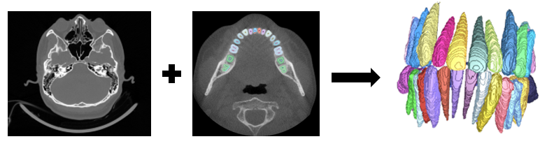
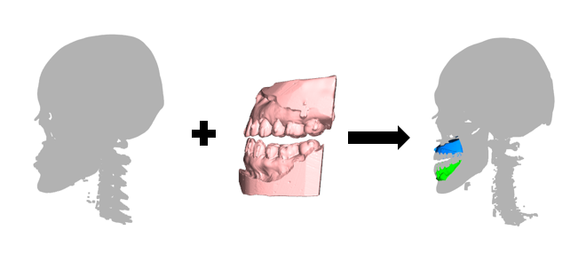

Digital dentistry increasingly relies on cone-beam computed tomography (CBCT) and intraoral scans (IOS) for diagnosis, treatment planning and image-guided intervention. CBCT provides root, bone and anatomical context, while IOS captures high-resolution crown geometry. In patients with fillings, crowns, bridges or implants, however, metal artifacts introduce streaking, shadowing and blooming effects that obscure boundaries and reduce the reliability of automated dental analysis.
STS 2026 focuses on artifact-resilient dental AI under real-world conditions. Unlike earlier editions centered on cleaner segmentation data, this challenge uses a multi-center dataset in which every case contains metallic objects. Participants are asked to build semi-supervised pipelines that remain robust when metal artifacts affect both anatomical segmentation and cross-modal IOS-CBCT alignment.
The challenge is organized around three tasks. Task 1 focuses on CBCT teeth segmentation in scans affected by metal artifacts. Task 2 evaluates CBCT-IOS registration for cross-modal dental model fusion. Task 3 is based on the MMDental dataset, extending the challenge toward multimodal dental AI that connects tooth CBCT images with expert medical records.

Segment teeth from CBCT scans containing metal artifacts caused by restorations, crowns or implants, with emphasis on robust tooth boundary recovery under streaking and blooming interference.

Align intraoral scan crown surfaces with CBCT volumes, combining high-resolution IOS geometry with CBCT root and bone information for complete digital patient models.
Use tooth CBCT images together with expert medical records, initial diagnoses and follow-up documentation to support multimodal dental diagnosis and clinical reasoning.
The 2026 edition introduces a metal-artifact-centered benchmark for real-world dental AI. The website now follows the updated three-task structure: metal artifact CBCT teeth segmentation, CBCT-IOS registration and MMDental multimodal analysis.
| Registration Opens / Training Data Release | April 1, 2026 |
| Validation Data Release / Validation Server Opens | June 1, 2026 |
| Docker Submission Portal Opens | July 15, 2026 |
| Final Submission Deadline | August 1, 2026 |
| Results Announcement / Workshop Invitations | August 15, 2026 |
| MICCAI 2026 Satellite Events | October 4 and 8, 2026 |
| MICCAI 2026 Main Conference | October 5-7, 2026 |
For questions about STS 2026, please contact wangyaqi@hdu.edu.cn, SemiTeethSegChallenge@outlook.com or zhi.li@hdu.edu.cn. We welcome questions, feedback and collaboration requests related to the STS 2026 challenge and look forward to meeting the community in Abu Dhabi.